Week 3 notes: Object Detection
Object localization
- image classification -> is this a "x" (single object)
- classification with localization -> where in the image is "x" (single object)
- detection -> multiple classifications in the image
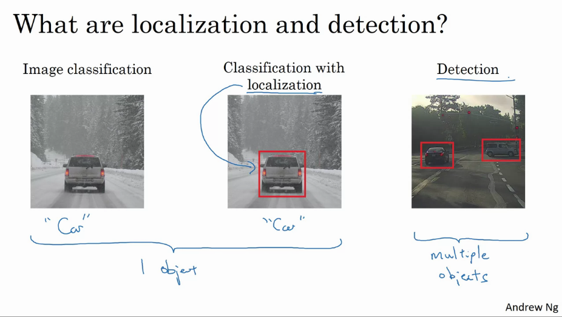
Classification with localization
- image into ConvNet, predict class
- x object classes, with one class being "background" or something similar, not "x"
- you can have the neural network output four numbers besides the classes, adn they parameterize the bounding box. bbox=(bx, by, bh, bw). Has to be in the training set!
- top left of image is (0,0), bottom right (1,1)
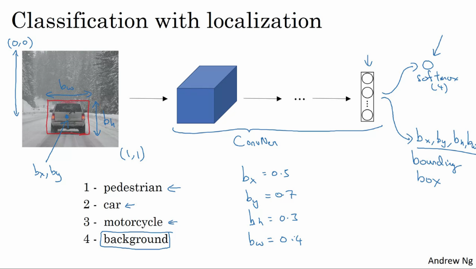
- network outputs probabilities of the output class
Defining target label y
- need to output bx, by, bh, bw (bbox) and class label
- pc = is there an object? ie background
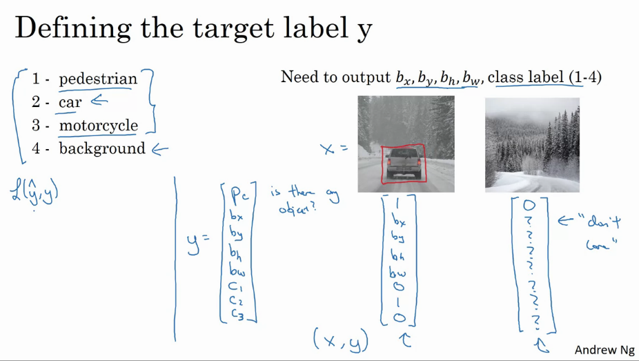
Example 1 (left) , example 2(right) in the image above:
y=⎣⎢⎢⎢⎢⎢⎢⎢⎢⎢⎢⎡pcbxbybhbwc1c2c3⎦⎥⎥⎥⎥⎥⎥⎥⎥⎥⎥⎤,y1=⎣⎢⎢⎢⎢⎢⎢⎢⎢⎢⎢⎡1bxbybhbw010⎦⎥⎥⎥⎥⎥⎥⎥⎥⎥⎥⎤,y2=⎣⎢⎢⎢⎢⎢⎢⎢⎢⎢⎢⎡0???????⎦⎥⎥⎥⎥⎥⎥⎥⎥⎥⎥⎤The loss can be described as
L(y^,y;y1=1)=(y^1−y1)2+(y^2−y2)2+...+(y^8−y8)L(y^,y;y1=0)=(y^1−y1)2You can use squared error for bbox coordinates, for the label you can use softmax and for pc you can use logistic regression loss / squared error
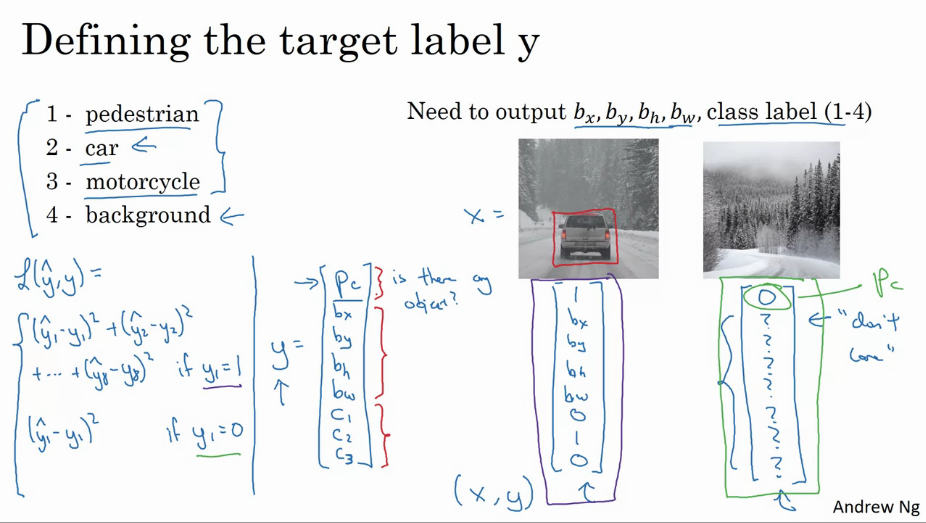
Landmark detection
- x,y coordinates of important points in image
Example: face recognition, want to get the corner of the eye
- output of network would be lx,ly which is a xy pair for one eye
- get some extra points to define a face, so lets find 64 landmarks on a face.
- now the output will have 64 * 2 (x,y) output units + one unit for "is there a face or not"

Similar to snapchat and other stuff.
- need a labelled training set for all landmarks
- annotation is alot of work :)
If you want to do pose-detection, you can also define key positions (right image) like shoulder, joints, ... and let the network output these. You need to specify the landmarks

Landmarks need to be consistent! ie. left eye should be first element in vector, ...
Object detection
Car detection example
- make training set X with images, Y with labels 0( no car) , 1 (car)
- crop out everything that is not car, so now we have very closely cropped images
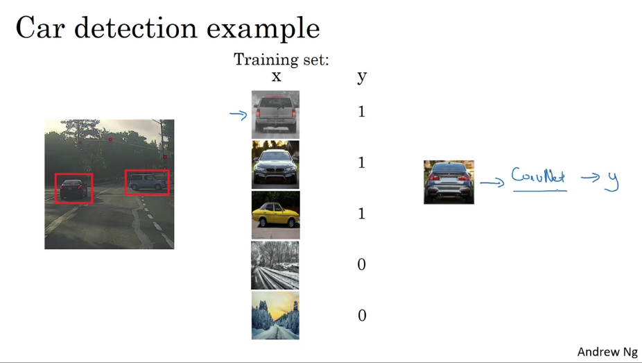
Sliding window (normal)
Once you have trained the conv net you can use sliding windows detection
- slide small window over the bigger image, feed it into the convnet and predict, note the output
- do this over totality of image (every position)
- repeat it with a larger window (scale invariance)
- ...

- big problem with this: computational cost!
- using bigger stride may be beneficial for computational cost, but bad for accuracy
- history: ppl used to use linear functions, so sliding windows are very low compututational cost. with convnets this is alot more expensive
Sliding window (convolutional)
Turning FC layer into conv layer
Lets define a network arch.
- output is softmax of classes
- how to turn this softmax fully connected layer as conv of 5x5
- the output will be of size 1x1x400
- mathematically this FC layer is the same as this 1x1x400 volume, as each of the neurons is an arbitrary linear function of this 5x5x16 layer
- do this for the fc layers, and end up with the softmax activation

Now we can use conv layers instead of fc layers.
convolution implementation of sliding windows
- as before we have a network arch, all of these are 3d volumes...

- imagine your test set image is bigger than your normal image (yellow border). you can now take a subset of the image and make a prediction (red, green, orange regions). In other words you run the conv net 4 times

- however, many of these computations are shared, so you can get instead of 4 times of inference, one time but the output dimension changes. Now you have a 2x2x4 output volume instead of a 1x1x4, where the top left is the original red subset, top right is green subset, bottom left is orange subset and bottom right is purple subset.
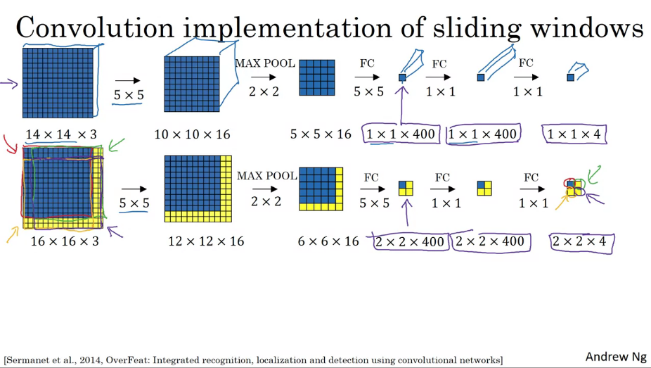
- this shares computation with the regions that are common. Sliding window on a 28x28x3 image. Now you have a 8x8x4 image.
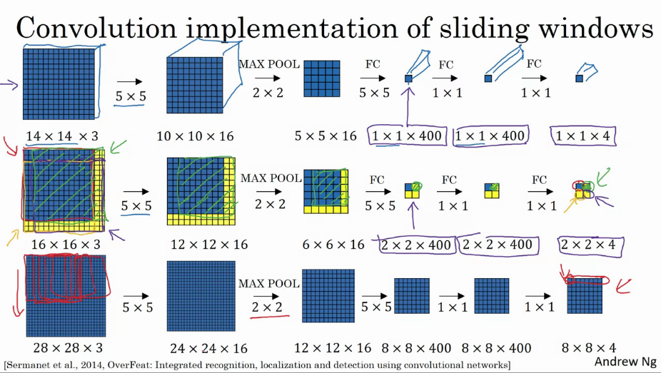
- recap: instead of doing this sequentially, we can do it all together in one go. makes the whole thing much more efficient.
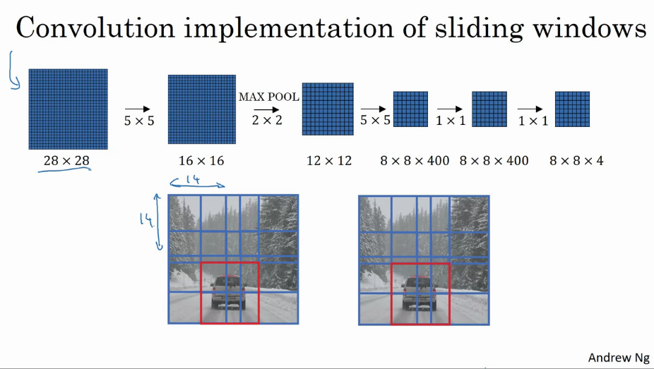
- However, position of bounding boxes is not very accurate!
Bounding box predictions
- bbox is not very accurate with sliding window
- maybe bounding box is not even square
Yolo algorithm
- place a grid on the image, for example 19 by 19.
- apply the classification to each of the gridcells
- Labels for training them become:
- for each grid cell, create a vector:
-
y=⎣⎢⎢⎢⎢⎢⎢⎢⎢⎢⎢⎡pcbxbybhbwc1c2c3⎦⎥⎥⎥⎥⎥⎥⎥⎥⎥⎥⎤
- in the image you do this for the 9 grid cells

- yolo algorithm takes the gridcells where there are objects, takes the midpoint of the objects and assigns the objects to a gridcell. For example, left car in green box, right car in yellow box.
- look at the midpoint of an object and assign it to only one grid cell.

- for the left (green) cell and right(yellow), the target label looks as follows:
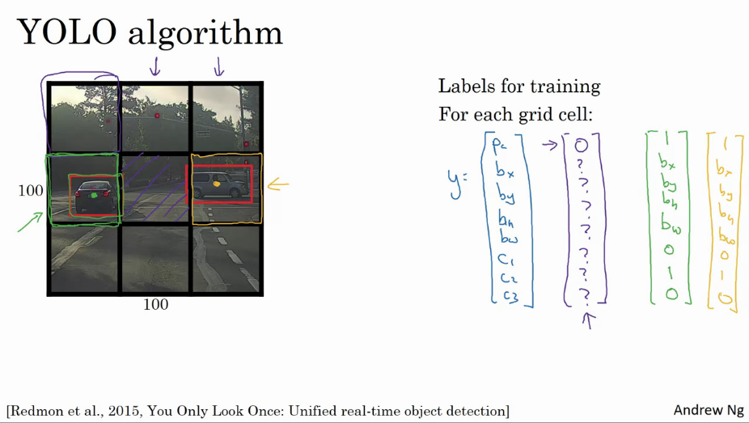
- for each of the 9 gridcells we end up with an 8-dimensional vector. this means the total volume of the output will be 3x3x8 (3x3 gridcells, 8dim yvec)
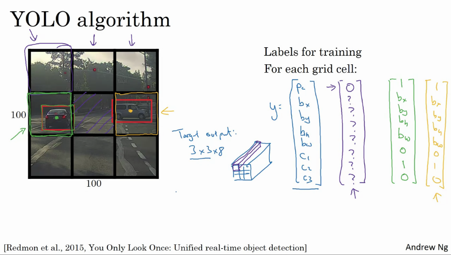
- to train, the input is 100x100x3, now we have a usually convnet that eventually maps to a 3x3x8 output volume.
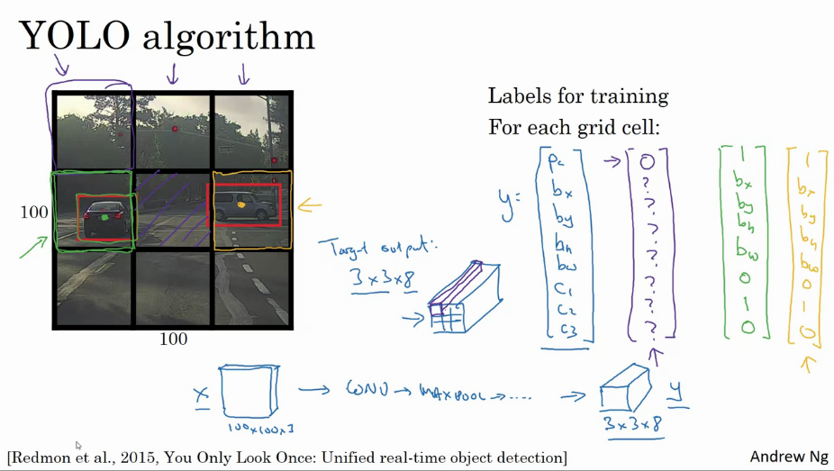
- for each of the outputs you can read out the first element ( is there an object), the position (bbox vals) and class. You can also get a finer grid such as 19x19
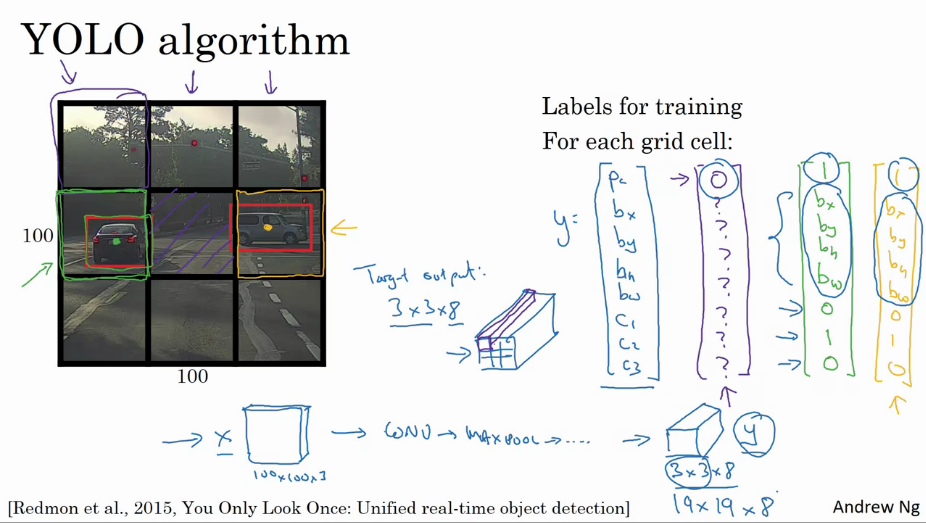
- now the bounding box is not square or predefined, its the closest fit
- single convolutional implementation with alot of shared computations so alot faster (very fast, realtime object detection works)
How do you encode bbox values?
- In the right gridcell there is an object. How do we specify the bounding box?

- To specify the position of the midpoint of the object, we look relative to the grid cell
- we can measure the distance

- where bx,by are between 0-1 by definition (or it would be assigned to different cell). Height and width could be bigger than one
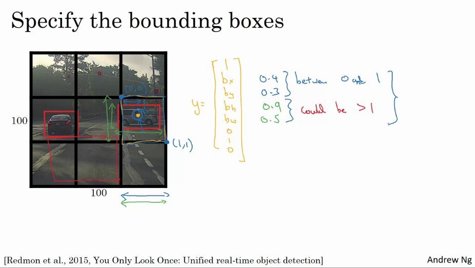
- we can also get more advanced parametrizations such as sigmoids and other stuff but this one should work ok.
- yolo paper is quite hard to read
IoU - Intersection over Union
- evaluation method
- computes the intersection over union of the two bounding boxes.
- size of intersection (orange) / size of union (green)

- typically if iou > 0.5 you count as correct
- "correctness of detection and localization of object"
- overlap between multiple bboxes
NMS - Non-maximum suppression
- algo might make multiple detections of singular object
- Yolo example --> 19x19 gridcells

- many detections are made for a single vehicle
- many of the gridcells might have pc=1 (thinking they have detected an object)
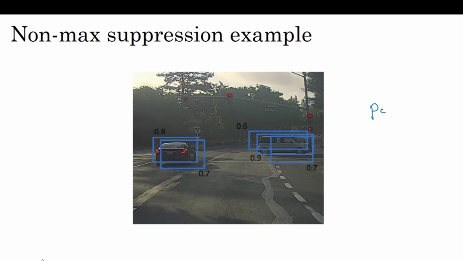
- now we want to clean up these detections
- first we look at the probabilities of the detection.
- first we take the rectangle with the largest probability
- now suppress the remaining rectangles.
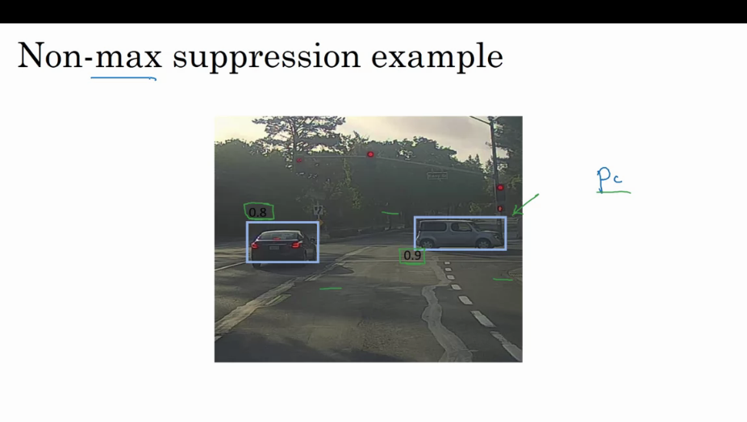
- we keep the maximum, but supress the weaker ones.
Constructing NMS
- using yolo, generate a grid of cells where each cell has an output prediction as below
- discard all boxes that have a low pc (for example smaller than 0.6)
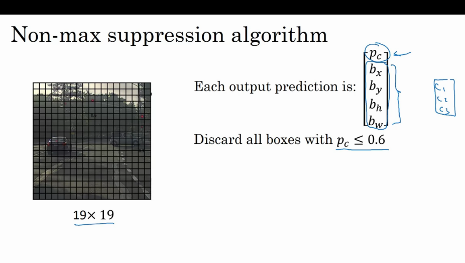
- while there are more boxes
- pick box with largest pc
- output this box as prediction
- discard any box with iou < 0.5 with the box of 2)
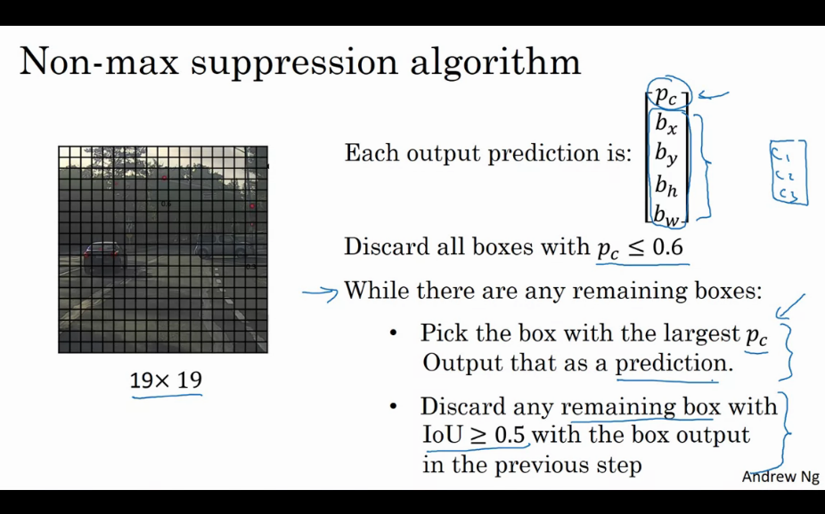
- if you have more than one class, the correct way of doing NMS is by performing NMS c times with c being the number of classes (see programming exercise)
Anchor boxes
- What if a gridcell wants to detect more than one box
- ie overlapping boxes
- make multiple anchorboxes
- now you also have more variables in the output vector y
- the shape of the pedestrian is more similar to anchorbox1, so you can use the first elements of the y-vector to match anchorbox1
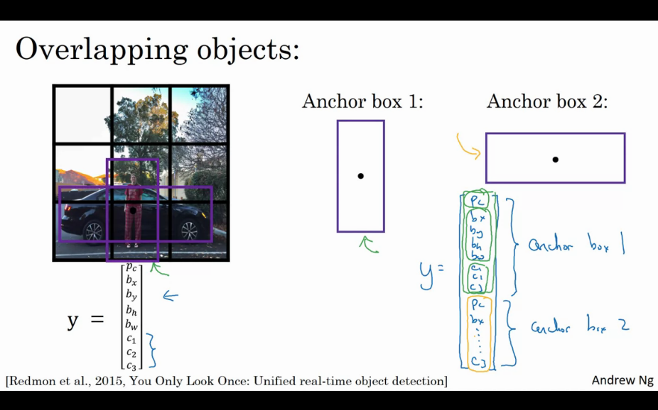
Previously: for each object in the training image, assign a grid cell that contains that objects midpoint.
With two anchorboxes: each object in training image is assigned to grid cel that contains objects midpoint and anchor box for the grid cell with highest IoU. In other words, the object gets assigned to a grid cell and an anchorbox, as a pair.
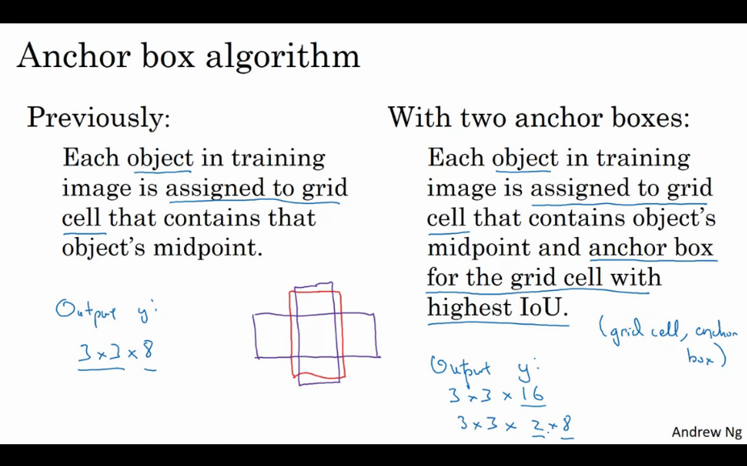
An anchorbox example:
- y now becomes twice the size, because we have two anchorboxes.
- c1,1 is one because its a pedestrian. c1,2=0 because its a car$
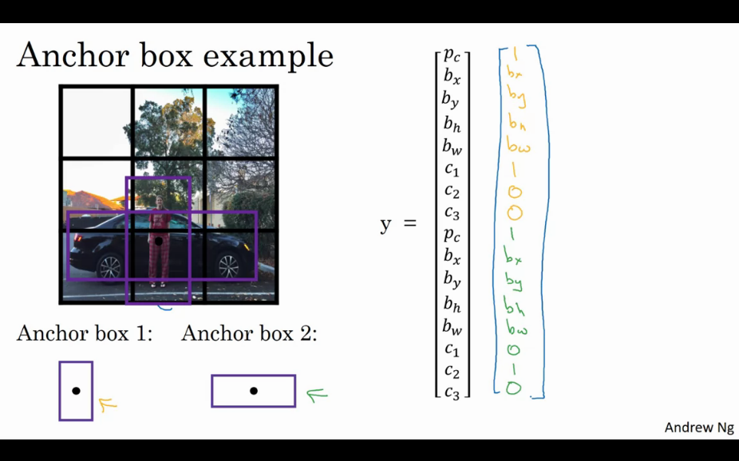
- if the grid cell only has a car (no pedestrian). The shape is more similar to anchor box 2, so the bottom part of the vector is just the same and the top part (ie for anchor box 1) has pc=0.
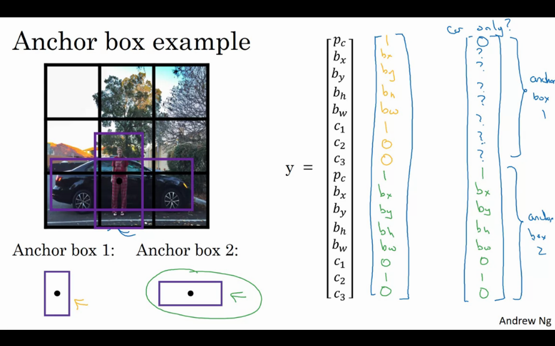
If you have a gridcell with three objects, this does not work. If you have two objects with the same shape it wont work either.
This method allows your learning algorithm to specialize in different shapes, such as thicker (cars) or skinnier (pedestrians).
How do you choose anchorboxes? By hand (5-10 boxes). A much more advanced version can be to use k-means to group the object shapes and use that to select a set of anchorboxes that are stereotypically linked to the object shape.
YOLO
- construct training set:
- if you are using two anchors, 3x3 grid cells
- the y vector consists of pc,bx,by,bh,bw + the amount of classes c1,...cn
- then the training set will be of size y=3×3×2×(5+3classes)

- can also be 3x3x16
- now, for each grid cell construct the appropriate y vector, so for example
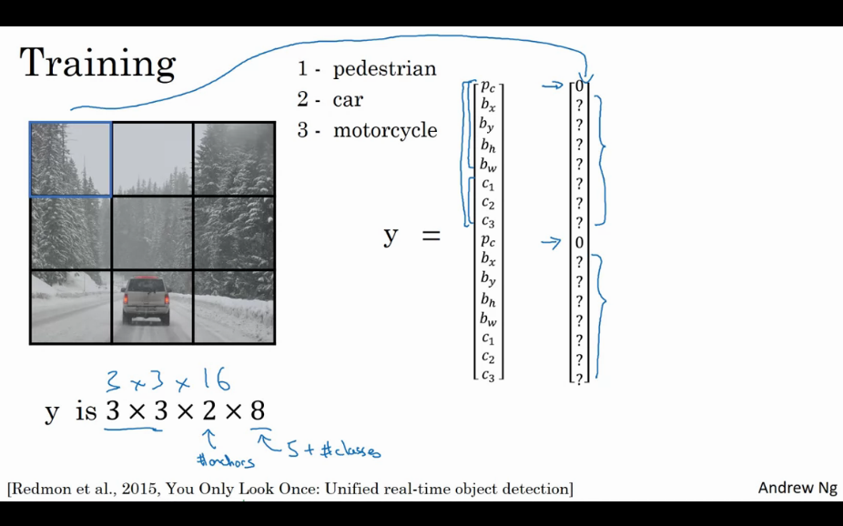
- however, for the center bottom box we do have something, so that cell will have this vector
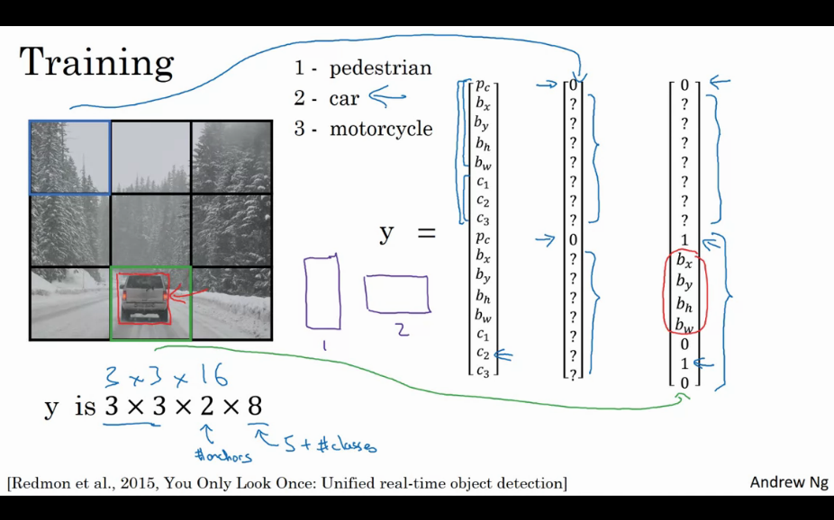
- in practice, the size of the grid will be alot bigger

Making predictions, we get as output the same size as the training set.
If theres no object, the output willbe
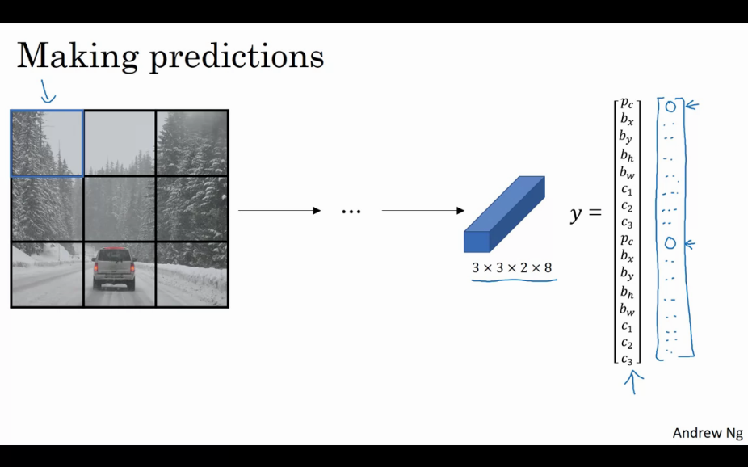
In contrast, for the bottom center cell there is a car
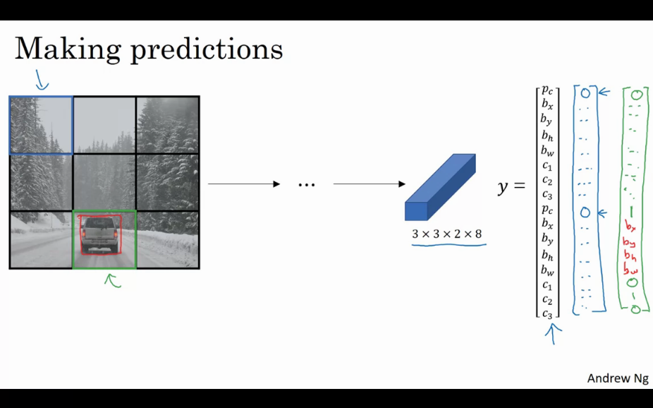
Outputting the non-max suppressed outputs
- for each grid call , get 2 predicted bounding boxes (some can go outside of gridcell)
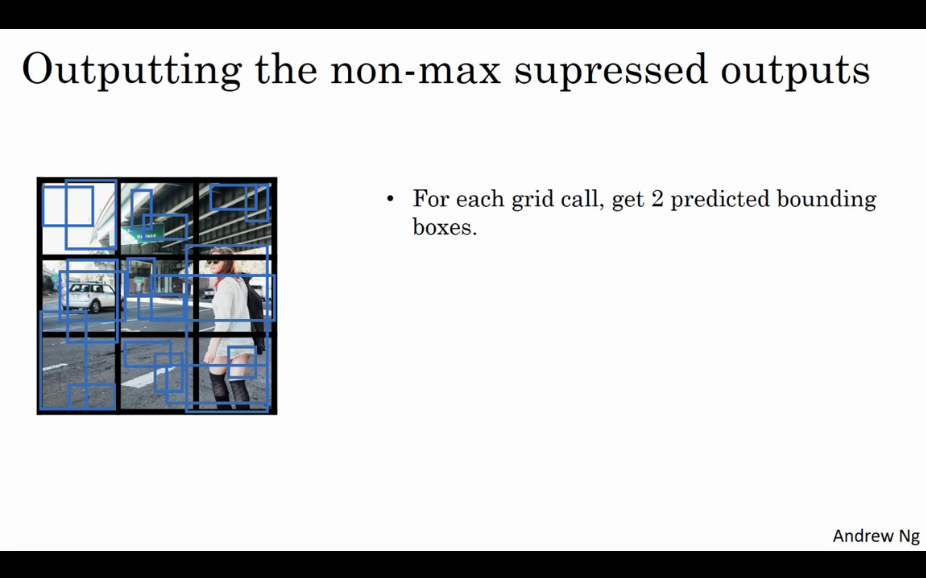
- get rid of low probability

- for each class independently run NMS to generate the final prediction
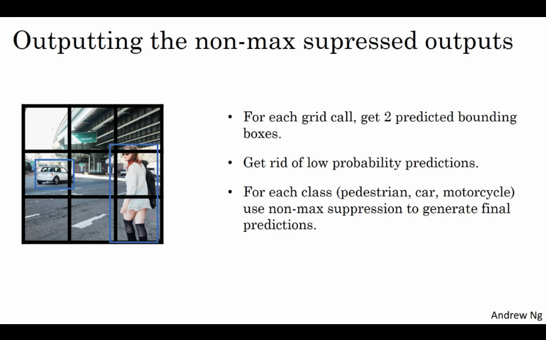
- output is hopefully that you got everything
Region Proposals
- recall sliding windows idea
- classifies alot of objects where there is nothing to classify (center image)
- run convnet only on select set of regions
- run segmentation network, find blobs (maybe 2000) and run classifier only on those.
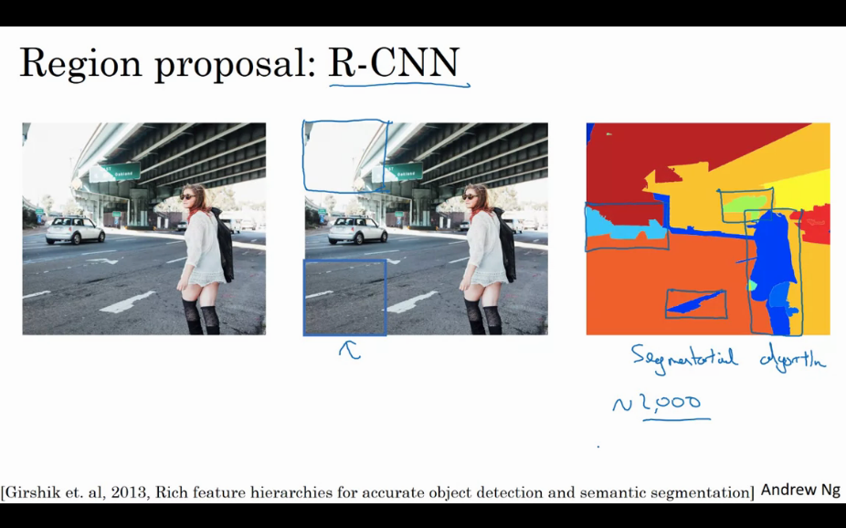
- R-CNN
- quite slow
- propose region
- classify one region at a time
- output label + bounding box
- Fast R-CNN
- R-CNN with convolutional implementation for sliding windows
- propose region is still quite slow
- Faster R-CNN
- uses CNN to propose regions
- alot faster
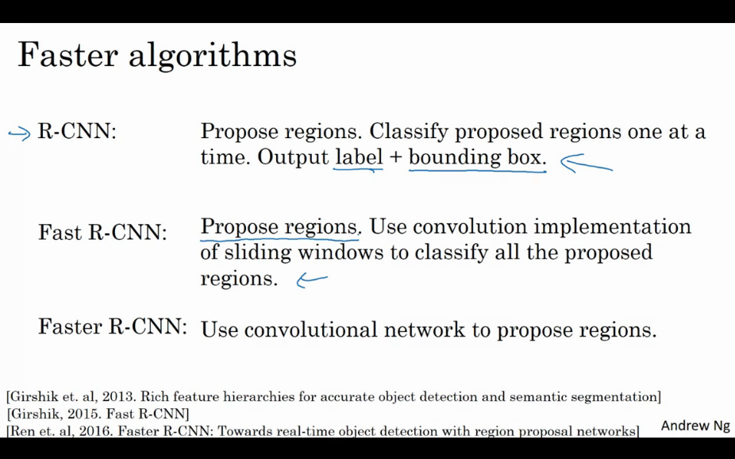
- Andrew NG does not really use region proposals. Yolo seems better according to him